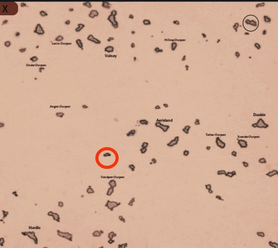
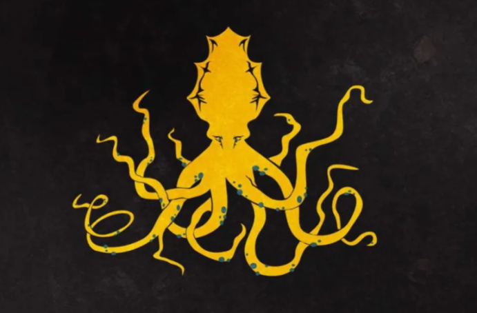

Sacred Daniel's Empire


The glorious maritime nation under the wise rule of our sacred Emperor.
P.S. To be able to log in you need to head to the Contact section — then apply for citizenship — then after all the process are done you will receive your ID and data to log in.
The Empire of Sacred Daniel is a sovereign maritime state born from defiance, bound by loyalty, and forged upon the waves. Its history stretches back to 33 A.D., when the first Daniel seized a Roman trireme and witnessed the rise of the Kraken from the depths. Through centuries of piracy, war, and imperial expansion, the Empire has endured as a beacon of honor, brotherhood, and naval supremacy.
Today, the Empire continues its traditions — from the Cult of the Kraken to the Legion of the Squid — and welcomes those who seek citizenship in a realm where the sea is not merely territory, but destiny itself.
Славная морская держава подъ мудрымъ правленiемъ нашего Священнаго Императора.
P.S. Чтобы войти, вамъ нужно перейти въ разделъ Контактовъ — затемъ подать заявку на гражданство — после завершенiя всѣхъ процедуръ вы получите свой ID и данные для входа.
Имперiя Священнаго Данiила — суверенная морская держава, рожденная изъ непокорства, скрѣпленная вѣрностью и выкованная на волнахъ. Ея исторiя восходитъ къ 33 году н.э., когда первый Данiилъ захватилъ римскую трiеру и узрѣлъ, какъ изъ глубинъ поднимается Кракенъ. Черезъ вѣка пиратства, войнъ и имперской экспансiи Имперiя устояла какъ маякъ чести, братства и морского превосходства.
Нынѣ Имперiя продолжаетъ свои традицiи — отъ Культа Кракена до Легiона Кальмара — и привѣтствуетъ тѣхъ, кто ищетъ гражданства въ государствѣ, гдѣ море — не просто территорiя, но сама судьба.
Sacred Daniel's Empire is a small sovereign state with an absolute monarchy located on the coast, with a strong focus on maritime activities. The country's economy is driven by fishing, trading, shipbuilding — in short, the sea is the main reason why this empire is even alive.
Its picturesque coastline offers stunning views and opportunities for tourism, attracting visitors from around the world. The culture of the country is deeply rooted in its maritime heritage, with traditional sailing practices and customs celebrated and preserved.
Sacred Daniel's Empire is known for its vibrant coastal communities, bustling ports, increased crime rate, and wise leaders.
Священная Имперiя Данiила — небольшое суверенное государство съ абсолютной монархiей, расположенное на побережье, съ сильнымъ акцентомъ на морскую дѣятельность. Экономика страны движима рыболовствомъ, торговлей, кораблестроенiемъ — короче говоря, море есть главная причина, по которой эта имперiя вообще существуетъ.
Ея живописная береговая линiя предлагаетъ захватывающiе виды и возможности для туризма, привлекая посѣтителей со всего мiра. Культура страны глубоко укоренена въ ея морскомъ наслѣдiи, съ традицiонными морскими практиками и обычаями, которыя празднуются и сохраняются.
Священная Имперiя Данiила извѣстна своими яркими прибрежными сообществами, оживлёнными портами, повышеннымъ уровнемъ преступности и мудрыми лидерами.

The real location of the empire is unknown, but after some skirmishes, myths say it lies somewhere on the South coast of Africa. The Empire saved the map of the archipelago with its base (black) and fort (red) before leaving it in 1800.
The full history — from the first Daniel's theft of the Roman trireme, through the Archipelago Campaign, the wars with Britain, and the mysterious abandonment of the islands — is recorded in the Imperial Archives.
Настоящее мѣстоположенiе имперiи неизвѣстно, но послѣ нѣкоторыхъ стычекъ, миѳы гласятъ, что она находится гдѣ-то на южномъ берегу Африки. Имперiя сохранила карту архипелага съ ея базой (чёрное) и фортомъ (красное) передъ тѣмъ, какъ покинуть его въ 1800 году.
Полная исторiя — отъ кражи первымъ Данiиломъ римской трiеры, черезъ Архипелагскую кампанiю, войны съ Британiей и таинственное оставленiе острововъ — записана въ Императорскихъ Архивахъ.
Titles: The First Daniel, Lord of the Black Angels, Prophet of the Kraken, The Sea-Father
Era: 1st Century A.D. and beyond (Beginning 33 A.D.)
Sacred Vessel: The Mini Angel (Originally a Roman Trireme)
P.S: There are at least 3 Daniels in card. The first one, His son and grandson who later will pronounce empire and himself as an emperor.
Lord Daniel is not merely a historical figure; he is the cornerstone of a nation and a faith. His story begins in the pivotal year 33 A.D., in the immediate, disillusioned aftermath of the Crucifixion of Jesus Christ. Unlike the masses, Daniel did not mourn; he was filled with disgust and fear at the event. This rejection of the established divine order was the catalyst for his destiny.
In an act of supreme defiance, he gathered a band of outcasts: thieves, mercenaries, and runaway slaves, and under cover of darkness, they seized a Roman trireme, slaughtering its crew. This ship, the very next day, would be christened the Mini Angel, the first sacred vessel of a new future empire.
The founding miracle occurred on the second day of their voyage. The sea turned black, and from the depths rose the Kraken, a colossal entity that Daniel interpreted not as a monster, but as a new God. While his crew trembled, Daniel stood firm and received his revelation. He declared to his followers: "There is no God left but the Kraken. And we are his sons and daughters." In that moment, he transformed from a fugitive into a Prophet, establishing the one true faith of his future empire. This direct, divine encounter made him a living saint, the chosen herald of a deity of the deep.
Daniel possessed a transcendent form of leadership. He found a crew of pathetic land-rats ready to betray each other for a piece of stale bread and, through his will and vision, forged them into pirates living by a code of honor, dignity, and respect for women. His early fleet was a unique society. Out of necessity, women were more numerous aboard ships due to the lack of land, participating fully in this new maritime life. It was under Daniel's rule that this disparate band evolved into a disciplined clan, the "Black Angels," who became more than soldiers, they were a family bound by blood and battle.
Daniel's reign was one of relentless expansion and confrontation with the unknown. His voyage to the forbidden Island in 1100 A.D. showcases his courage and the limits of his power. After a brutal, unexplained attack by feral tribesmen who seemed driven by a terror greater than his own crew, Daniel was forced to retreat. His final log entry, "They feared not us. They fled from something else... something in the high valleys," marked one of the rare times the empire chose mystery over conquest, purging the island's coordinates from their charts forever.
The Eternal Rival: Admiral James Norridon
Daniel's character is further defined by his long-standing conflict with Admiral James Norridon of the Royal Navy. This was not a simple feud but a clash of philosophies. Norridon was a master of disciplined, honorable warfare, while Daniel fought as an unpredictable, ruthless privateer king. Despite the bloodshed, Daniel deeply admired Norridon for his honor and his profound understanding of the sea. Their battles were a "deadly dance" where neither could land a killing blow. In his old age, it is said that Daniel would toast his rival: "To Norridon. May the depths be kinder to him than I ever was."
Lord Daniel's life laid the foundation for everything that follows: he provided the sacred relic: the Mini Angel, a ship that would be rebuilt over centuries but forever remain the soul of the empire. He founded the state religion: the Cult of the Kraken, which would later be formalized into the militant "Legion of the Squid" order. He established the core principles of honor, brotherhood, and naval supremacy. He instituted the imperial title, ensuring every ruler to follow would bear his name and the title Sacred.
Title: Sacred Emperor of the Empire of Sacred Daniel
Era: 18th Century
Notable Vessel: The Sacred Mini Angel (Brig and flagman of the empire)
Character Analysis
Emperor Daniel de Courno was the defining ruler of his age, a sovereign whose intellect and calculated demeanor shaped an era of expansion, reform, and consolidation for his empire. Daniel's most defining trait was his calculating and highly intelligent mind. He was not a man of impulsive action. Every decision, from the smallest decree to the grandest imperial policy, was considered numerous times, and even after a course was chosen, he would continue to ponder its ramifications. This relentless analysis made him a formidable strategist, always several steps ahead of his adversaries and allies alike.
Despite his reserved and thoughtful nature, the Emperor possessed undeniable charisma and an easy ability to make friends. This personal charm was a powerful political tool, allowing him to secure alliances, inspire loyalty in his admirals, and present a compelling figurehead to his people. He was a thinker, but not a recluse.
Unusual for a monarch of his stature, Daniel de Courno was deeply connected to the maritime lifeblood of his empire. He was known to personally take to the seas on his brig, the Sacred Mini Angel, demonstrating a hands-on approach to leadership and a genuine connection to his navy.
His reign was profoundly marked by the Archipelago Campaign (1760-1800), a period of intense activity that saw the empire stumble upon, conquer, and ultimately abandon a strategically vital island chain. Under Daniel's direction, the empire aggressively developed the archipelago, funneling massive quantities of resources back to the Capital.
A key strategic victory, unrelated to battle, was the alliance with the Scots (1765-1800). Emperor Daniel immediately recognized the opportunity presented by the lost Scottish fleet. With shrewd foresight, he swiftly extended an offer of alliance, transforming a potential threat into a "powerful, temporary navy." This three-decade-long pact secured imperial dominance over the islands.
The campaign's military climax was the decisive annihilation of the Dublin Fleet in 1798. While commanded by the legendary Admiral Bharath, the victory was a direct result of the imperial war machine Daniel had built and the alliances he had fostered.
In a final act of strategic calculation, the Empire made the strategic decision to abandon the archipelago in 1800 to pursue greater ambitions elsewhere.
Titles: Imperial Advisor, Keeper of the Archives
Affiliation: The Imperial House of Sacred Daniel
Known For: Unconventional intelligence gathering, profound loyalty, and a life lived in many guises
Arthur Bha was the quintessential man of contrasts. Officially, he was the emperor's highest advisor, a figure most at home in the dim light of the imperial archives, surrounded by the secrets and laws of the realm. He was a scholar and a diplomat, the meticulous hand that recorded history and guided the emperor with a quiet, reasoned voice.
Yet, the palace walls could not contain him. When the weight of duty became stifling, Arthur would vanish. He was a master of infiltration. He would disguise himself as a common traveler, joining merchant crews, pirate bands, or even buying tickets on noble transports. This was not for leisure, but a deeper need to understand the empire from the ground up.
His journeys were far from passive. Arthur Bha was a man of direct and often dangerous action: he walked foreign roads, listening to stories and subtly convincing worthy individuals to seek citizenship in the empire; utilizing the combat skills honed during his six years of mandatory military service, he took up bounty hunting, his sword proving deadly against deserters and outlaws; on the far frontiers, he transformed into a gatherer and hunter, foraging for rare plants like cotton shrubs and medicinal herbs while simultaneously tracking wanted criminals.
His very name, Bha, was adopted in honor of Admiral Bharath, a figure he deeply admired. Within the empire, Arthur became the silent guardian of the Admiral's legacy, personally ensuring that Bharath's innovative machines—the pulleys, pumps, and other contraptions—remained in working order.
To the world, he was a diplomat, a scholar, a bounty hunter, and a botanist. But to the emperor, he was simply Arthur Bha—the man who recorded history, guarded its truths, and, when needed, rewrote fate itself with a blade or a pen.
Titles: Admiral of the Imperial Navy, The Cook-Admiral, The Mad Scientist, Emperor (1850-1855)
Era: Mid-to-Late 19th Century
Known For: Naval brilliance, technological innovation, and an unprecedented rise from cabin boy to Emperor
Admiral Bharath's career is a testament to sheer, unyielding stubbornness and latent genius. His story began as a scrawny, orphaned boy on the docks of Volney, spotted by Captains Patih and Joe. They brought him aboard the Sacred Mini Angel, the flagship of Emperor Daniel himself. Unlike any other sailor, Bharath's ambition was not for command but for the ship. He became the ship's cook, a brilliant one and refused promotions for years. His legendary meals were a cornerstone of crew morale.
When fate and his own relentless mind pushed him into command, Bharath revealed his true genius: he was a master of diplomacy and psychological warfare. His most legendary move during the Archipelago Campaign was the bloodless capture of six islands from a rival fleet (likely French), without spending a single grain of gunpowder. He proved that the empire's greatest expansion could be achieved not just through cannon fire, but through unparalleled cunning.
Bharath's mind was never confined to naval tactics. He was a genius inventor and a restless engineer, constantly seeing problems and designing solutions. He designed pulley systems for faster cargo loading, hydraulic pumps, and primitive telegraphs. This created a unique cultural divide in the empire: Bharath's innovations revolutionized the navy and infrastructure, while the Imperial household clung to tradition.
Bharath's brilliance made him powerful enemies who orchestrated a vicious smear campaign against him. His salvation came from the very top: Emperor Daniel and his enigmatic friend, Lonee, personally started a rescue mission to extract Bharath and dismantle the conspiracy.
When Emperor Daniel later succumbed to an unknown illness (likely tuberculosis), the empire faced a succession crisis. In a testament to his universal respect, Admiral Bharath was chosen as the new ruler by the unanimous support of the army and the elite imperial guard, The Black Angels (TBA).
His reign (1850-1855) was that of a military man struggling with governance. Recognizing his own limitations in politics, he made the startlingly humble decision to abdicate in 1855, prioritizing the empire's stability over his own power.
Titles: Lord, Captain, City-Builder, High Inquisitor of the Legion of the Squid
Era: 17th-18th Centuries
Known For: A profound transformation from a charismatic nobleman to a fanatical zealot, driven by a core of innate kindness and formidable intellect
Lord Def's life is a story of radical transformation, a journey where his core traits of kindness, responsiveness, and incredible intelligence were refined and redirected through extraordinary experiences.
In his youth, he was the epitome of nobility, known for his charm and love for high society. He was a frequent guest at the philharmonic and every prestigious ball, and his sharp mind found a dangerous outlet in a passion for gambling. However, this was not the recklessness of a fool, but the calculated risk-taking of a brilliant man seeking stimulation.
Beneath the surface of the gambler and socialite lay Def's true nature: he was fundamentally kind, responsive, and possessed of a formidable intellect. This innate goodness manifested in his role as a patient teacher, where he led merchant convoys not through intimidation, but by schooling raw recruits in seamanship through discipline and skill.
His intelligence was both creative and strategic. He was a visionary builder who designed and overseen the construction of an entire fortified city called Fort Green, demonstrating not only architectural genius but also the foresight to terraform the land for sustainable agriculture.
Def was a man who could seamlessly transition from the drawing room to the battlefield. He was courageous and hands-on, personally dueling one of the empire's most wanted assassins and throwing him into a dungeon. Yet, he also possessed a profound, almost spiritual need for solitude, finding peace in the unlikeliest of places: fishing in the heart of the treacherous Dark Sea.
In his later years, the same intensity that once drove him to gambling and city-building found a new, ultimate focus: religious fervor. He went completely to the Legion of the Squid. His kindness curdled into a brutal, unwavering fanaticism. His brilliant intellect was now a weapon for theological argument and the orchestration of purges. He ascended to the rank of high inquisitor, preaching the Kraken's will with fire and steel.
Lord Def remains the empire's most complex zealot: a man who built and nurtured, only to become its most relentless purifier.
Титулы: Первый Данiилъ, Повелитель Чёрныхъ Ангеловъ, Пророкъ Кракена, Морской Отецъ
Эпоха: I вѣкъ н.э. и далѣе (начало 33 г. н.э.)
Священное Судно: Мини-Ангелъ (изначально римская трирема)
P.S. Въ карточкѣ фигурируютъ по меньшей мѣрѣ три Данiила. Первый, его сынъ и внукъ, который впослѣдствiи провозгласитъ имперiю, а себя императоромъ.
Лордъ Данiилъ не просто историческая фигура ибо онъ краеугольный камень нацiи и вѣры. Его исторiя начинается въ поворотномъ 33 году н.э., въ горькомъ, полномъ разочарованiя отрезвленiи, наступившемъ сразу послѣ Распятiя Iисуса Христа. Въ отличiе отъ толпы, Данiилъ не скорбѣлъ; онъ былъ преисполненъ отвращенiя и страха передъ этимъ событiемъ. Это отверженiе установленнаго божественнаго порядка стало катализаторомъ его судьбы.
Въ актѣ высшаго неповиновенiя онъ собралъ отрядъ изгоевъ: воровъ, наёмниковъ и бѣглыхъ рабовъ, и подъ покровомъ ночи они захватили римскую трирему, вырѣзавъ ея команду. Уже на слѣдующiй день этотъ корабль былъ нарѣчёнъ «Мини-Ангеломъ» или первымъ священнымъ судномъ будущей новой имперiи.
Чудо-основанiе произошло на второй день плаванiя. Море почернѣло, и изъ глубинъ поднялся Кракенъ - колоссальная сущность, которую Данiилъ истолковалъ не какъ чудовище, а какъ новаго Бога. Пока его команда дрожала отъ страха, Данiилъ стоялъ твѣрдо и принялъ своё откровенiе. Онъ провозгласилъ своимъ послѣдователямъ: «Не осталось иного Бога, кромѣ Кракена. И мы его сыновья и дочери». Въ этотъ мигъ онъ превратился изъ бѣглеца въ Пророка, утвердивъ единую истинную вѣру своей будущей имперiи. Эта прямая встрѣча съ божественнымъ сдѣлала его живымъ святымъ, избраннымъ глашатаемъ божества глубинъ.
Данiилъ обладалъ запредѣльнымъ даромъ лидерства. Онъ нашёлъ команду жалкихъ сухопутныхъ крысъ, готовыхъ перерѣзать другъ другу глотки за кусокъ чёрстваго хлѣба, и своей волей и видѣнiемъ превратилъ ихъ въ пиратовъ, живущихъ по кодексу чести, достоинства и уваженiя къ женщинамъ. Его раннiй флотъ представлялъ собой уникальное общество. По необходимости, изъ-за нехватки земли, женщинъ на корабляхъ было больше, и онѣ полноправно участвовали въ этой новой морской жизни. Именно подъ властью Данiила этотъ разрозненный сбродъ превратился въ дисциплинированный кланъ «Чёрныхъ Ангеловъ», которые стали больше, чѣмъ солдатами, а имѣнно семьёй, скрѣплённой кровью и битвами.
Правленiе Данiила было временемъ неустанной экспансiи и столкновенiй съ невѣдомымъ. Его плаванiе къ Запретному Острову въ 1100 году н.э. демонстрируетъ его мужество и предѣлы его власти. Послѣ жестокой, необъяснимой атаки дикихъ племёнъ, которыя, казалось, были движимы ужасомъ куда большимъ, чѣмъ его собственная команда, Данiилъ былъ вынужденъ отступить. Его послѣдняя запись въ судовомъ журналѣ: «Они боялись не насъ. Они бѣжали отъ чего-то иного... чего-то въ высокихъ долинахъ», это одинъ изъ тѣхъ рѣдкихъ случаевъ, когда имперiя предпочла тайну завоеванiю, навсегда вычеркнувъ координаты острова со своихъ картъ.
Вѣчный Соперникъ: адмиралъ Джеймсъ Норридонъ
Характеръ Данiила также раскрывается въ его многолѣтнемъ противостоянiи съ адмираломъ Королевскаго флота Джеймсомъ Норридономъ. Это была не простая вражда, но столкновенiе философiй. Норридонъ былъ мастеромъ дисциплинированной, благородной войны, тогда какъ Данiилъ сражался какъ непредсказуемый и безжалостный король каперовъ. Несмотря на кровопролитiе, Данiилъ глубоко восхищался Норридономъ за его честь и глубокое пониманiе моря. Ихъ битвы были словно смертельный танецъ, въ которомъ ни одинъ не могъ нанести смертельный ударъ. Говорятъ, въ старости Данiилъ поднималъ тостъ за своего соперника: «За Норридона. Да будутъ глубины къ нему добрѣе, чѣмъ я когда-либо былъ».
Жизнь Лорда Данiила заложила основу для всего, что послѣдовало далѣе: онъ оставилъ священную реликвiю «Мини-Ангела», корабль, который будетъ перестраиваться вѣками, но навсегда останется душой имперiи. Онъ основалъ государственную религiю - Культъ Кракена, который позже оформится въ воинствующiй орденъ «Легiонъ Кальмара». Онъ утвердилъ основные принципы чести, братства и военно-морского превосходства. Онъ учредилъ императорскiй титулъ, повелѣвъ каждому послѣдующему правителю носить его имя и титулъ Священнаго.
Титулъ: Священный Императоръ Имперiи Священнаго Данiила
Эпоха: XVIII вѣкъ
Примѣчательное судно: «Священный Мини-Ангелъ» (бригъ и флагманъ имперiи)
Императоръ Данiилъ де Курно былъ опредѣляющимъ правителемъ своей эпохи, монархомъ, чей интеллектъ и разсчётливый нравъ сформировали перiодъ экспансiи, реформъ и укрѣпленiя его имперiи. Самой опредѣляющей чертой Данiила былъ его разсчётливый и крайне острый умъ. Онъ не былъ человѣкомъ импульсивныхъ дѣйствiй. Каждое рѣшенiе, отъ самаго малаго указа до величайшей имперской политики, обдумывалось безчисленное множество разъ, и даже послѣ того, какъ курсъ былъ выбранъ, онъ продолжалъ размышлять о его послѣдствiяхъ. Этотъ неустанный анализъ дѣлалъ его грознымъ стратегомъ, всегда на нѣсколько шаговъ опережавшимъ какъ противниковъ, такъ и союзниковъ.
Несмотря на свою сдержанную и вдумчивую натуру, Императоръ обладалъ неоспоримой харизмой и лёгкостью въ умѣньи заводить друзей. Это личное обаянiе было мощнымъ политическимъ инструментомъ, позволявшимъ ему заключать союзы, внушать преданность своимъ адмираламъ и служить притягательнымъ символомъ для своего народа. Онъ былъ мыслителемъ, но не затворникомъ.
Необычно для монарха его положенiя, Данiилъ де Курно былъ глубоко связанъ съ морской кровеносной системой своей имперiи. Онъ, какъ извѣстно, лично выходилъ въ море на своёмъ бригѣ «Священный Мини-Ангелъ», демонстрируя практическiй подходъ къ лидерству и подлинную связь со своимъ флотомъ.
Его правленiе было глубоко отмѣчено архипелаговой кампанiей (1760–1800), перiодомъ напряжённой дѣятельности, въ ходѣ котораго имперiя наткнулась на стратегически важную цѣпь острововъ, завоевала её и въ конечномъ счётѣ оставила.
Ключевой стратегической побѣдой, не связанной со сраженiемъ, сталъ союзъ съ шотландцами (1765–1800). Императоръ Данiилъ немедленно распозналъ возможность, которую предоставлялъ потерянный шотландскiй флотъ. Съ прозорливой дальновидностью онъ быстро предложилъ альянсъ, превративъ потенцiальную угрозу въ мощный временный флотъ.
Военной кульминацiей кампанiи стало рѣшающее уничтоженiе Дублинскаго флота въ 1798 году. Хотя командовалъ имъ легендарный адмиралъ Бхаратъ, побѣда стала прямымъ результатомъ имперской военной машины, построенной Данiиломъ, и союзовъ, которые онъ взрастилъ.
Въ качествѣ послѣдняго акта стратегическаго разсчёта, опредѣлившаго всё его правленiе, исторiя зафиксировала, что Имперiя приняла стратегическое рѣшенiе оставить архипелагъ въ 1800 году.
Титулы: Имперскiй Совѣтникъ, Хранитель Архивовъ
Принадлежность: Имперскiй Домъ Священнаго Данiила
Извѣстенъ нестандартнымъ сборомъ свѣдѣнiй, глубокой преданностью и жизнью, прожитой во множествѣ обличiй.
Артуръ Бха былъ квинтэссенцiей контрастовъ, оффицiально онъ являлся высшимъ совѣтникомъ императора, фигурой, наиболѣе привычной къ тусклому свѣту имперскихъ архивовъ, въ окруженiи тайнъ и законовъ государства. Онъ былъ учёнымъ и дипломатомъ, дотошной рукой, записывавшей исторiю и направлявшей императора тихимъ, разсудительнымъ голосомъ.
Однако дворцовыя стѣны не могли удержать его и когда бремя долга становилось удушающимъ, Артуръ исчезалъ. Онъ не былъ человѣкомъ, путешествовавшимъ на личномъ кораблѣ съ помпой; вмѣсто этого онъ былъ мастеромъ проникновенiя. Онъ маскировался подъ обычнаго путешественника, присоединяясь къ командамъ торговцевъ, пиратскимъ шайкамъ или даже покупая билеты на дворянскiе транспорты. Это дѣлалось не ради досуга, а изъ глубокой потребности понимать имперiю съ самыхъ низовъ.
Его путешествiя были далеко не пассивными. Артуръ Бха былъ человѣкомъ прямого и зачастую опаснаго дѣйствiя: онъ ходилъ по чужимъ дорогамъ, слушая исторiи и исподволь убѣждая достойныхъ людей искать гражданства въ имперiи, укрѣпляя ея ткань извнѣ; используя боевые навыки, отточенные за шесть лѣтъ обязательной военной службы, онъ занимался охотой за головами, и его мечъ оказывался смертоноснымъ для дезертировъ и преступниковъ; на дальнихъ рубежахъ онъ превращался въ собирателя и охотника, добывая рѣдкiя растенiя, такiя какъ кусты хлопчатника и лѣкарственныя травы, одновременно выслѣживая разыскиваемыхъ преступниковъ.
Само его имя, Бха, было принято въ честь адмирала Бхарата, фигуры, которой онъ глубоко восхищался. Это не было пустымъ жестомъ. Внутри имперiи Артуръ сталъ молчаливымъ хранителемъ наслѣдiя адмирала, лично слѣдя за тѣмъ, чтобы инновацiонныя машины Бхарата: шкивы, насосы и прочiя устройства оставались въ рабочемъ состоянiи.
Артуръ Бха не поддавался простой классификацiи. Для мiра онъ былъ дипломатомъ, учёнымъ, охотникомъ за головами и ботаникомъ. Но для императора онъ былъ просто Артуромъ Бха — человѣкомъ, который записывалъ исторiю, хранилъ ея истины и, когда требовалось, переписывалъ саму судьбу клинкомъ или перомъ.
Титулы: Адмиралъ Имперскаго Флота, Поваръ-Адмиралъ, Безумный Учёный, Императоръ (1850–1855)
Эпоха: Середина-конецъ XIX вѣка
Извѣстенъ флотоводческимъ генiемъ, технологическими инновацiями и безпрецедентнымъ взлётомъ отъ юнги до Императора.
Карьера адмирала Бхарата это свидѣтельство чистаго, несгибаемаго упрямства и скрытаго генiя. Его исторiя началась съ тощаго мальчика-сироты въ докахъ Вольнея, замѣченнаго капитанами Патихомъ и Джо. Они взяли его на бортъ «Священнаго Мини-Ангела», флагмана самого Императора Данiила. Въ отличiе отъ любого другого моряка, амбицiи Бхарата были направлены не на командованiе, а на корабль. Онъ сталъ корабельнымъ кокомъ, блестящимъ поваромъ, и годами отказывался отъ повышенiй. Его легендарныя блюда были краеугольнымъ камнемъ боевого духа экипажа.
Когда судьба и его собственный неутомимый умъ вытолкнули его къ командованiю, Бхаратъ раскрылъ свой истинный генiй: онъ былъ мастеромъ дипломатiи и психологической войны. Его самымъ легендарнымъ ходомъ во время Архипелаговой кампанiи сталъ безкровный захватъ шести острововъ у соперничающаго флота (вѣроятно, французскаго), не потративъ ни единаго зерна пороха. Онъ доказалъ, что величайшаго расширенiя имперiи можно достичь не только пушечнымъ огнёмъ, но и непревзойдённой хитростью.
Умъ Бхарата никогда не ограничивался военно-морской тактикой. Онъ былъ генiальнымъ изобрѣтателемъ и безпокойнымъ инженеромъ. Онъ проектировалъ системы шкивовъ для болѣе быстрой погрузки грузовъ, гидравлическiе насосы и примитивные телеграфы. Это создало уникальный культурный расколъ въ имперiи: инновацiи Бхарата произвели революцiю во флотѣ и инфраструктурѣ, въ то время какъ Имперскiй домъ цѣплялся за традицiи.
Генiальность Бхарата породила могущественныхъ враговъ, организовавшихъ противъ него злобную клеветническую кампанiю. Его спасенiе пришло съ самаго верха: Императоръ Данiилъ и его загадочный другъ Лоуни лично начали спасательную миссiю.
Когда Императоръ Данiилъ позже скончался отъ неизвѣстной болѣзни (вѣроятно, туберкулёза), имперiя столкнулась съ кризисомъ наслѣдованiя. Свидѣтельствомъ всеобщаго уваженiя къ нему стало то, что адмиралъ Бхаратъ былъ выбранъ новымъ правителемъ единогласной поддержкой армiи и элитной имперской гвардiи, Чёрныхъ Ангеловъ.
Его правленiе (1850–1855) было правленiемъ военнаго человѣка, боровшагося съ управленiемъ государствомъ. Осознавъ свою ограниченность въ политикѣ, онъ принялъ поразительно смиренное рѣшенiе отречься отъ престола въ 1855 году, поставивъ стабильность имперiи выше собственной власти.
Титулы: Лордъ, Капитанъ, Градостроитель, Верховный Инквизиторъ Легiона Кальмара
Эпоха: XVII–XVIII вѣка
Извѣстенъ глубокой трансформацiей изъ харизматичнаго дворянина въ фанатичнаго ревнителя, движимаго врождённой добротой и выдающимся интеллектомъ.
Жизнь Лорда Дефа это исторiя радикальнаго преображенiя, путешествiе, въ которомъ его главныя черты доброта, отзывчивость и невѣроятный умъ были отточены и перенаправлены черезъ необычайныя переживанiя.
Въ молодости онъ былъ воплощенiемъ благородства, извѣстнымъ своимъ обаянiемъ и любовью къ высшему обществу. Онъ былъ частымъ гостемъ филармонiи и каждаго престижнаго бала, а его острый умъ находилъ опасный выходъ въ страсти къ азартнымъ играмъ. Однако это не было безразсудствомъ глупца, но просчитаннымъ рискомъ блестящаго человѣка, ищущаго стимуловъ.
Подъ внѣшностью игрока и свѣтскаго льва скрывалась истинная натура Дефа: онъ былъ въ основѣ своей добрымъ, отзывчивымъ и обладалъ грознымъ интеллектомъ. Эта врождённая добродѣтель проявлялась въ его роли терпѣливаго учителя, когда онъ вёлъ купеческiе конвои не запугиванiемъ, а обученiемъ неопытныхъ новобранцевъ морскому дѣлу черезъ дисциплину и мастерство.
Его интеллектъ былъ одновременно творческимъ и стратегическимъ. Онъ былъ провидцемъ-строителемъ, который спроектировалъ и руководилъ возведенiемъ цѣлаго укрѣплённаго города подъ названiемъ Фортъ-Гринъ, продемонстрировавъ не только архитектурный генiй, но и дальновидность въ преобразованiи земли для устойчиваго сельскаго хозяйства.
Дефъ былъ человѣкомъ, способнымъ безпрепятственно переходить изъ гостиной на поле боя. Онъ былъ мужественнымъ и дѣятельнымъ, лично сразившись на дуэли съ однимъ изъ самыхъ разыскиваемыхъ убiйцъ имперiи и бросивъ его въ темницу. Вмѣстѣ съ тѣмъ, онъ обладалъ глубокой, почти духовной потребностью въ уединенiи, находя покой за рыбной ловлей въ сердцѣ коварнаго Тёмнаго моря.
Въ болѣе позднiе годы та же интенсивность, что нѣкогда влекла его къ азартнымъ играмъ и градостроительству, обрѣла новый, окончательный фокусъ: религiозное рвенiе. Онъ полностью ушёлъ въ Легiонъ Кальмара. Его доброта свернулась въ жестокiй, непоколебимый фанатизмъ. Онъ поднялся до званiя верховнаго инквизитора, проповѣдуя волю Кракена огнёмъ и сталью. Человѣкъ, когда-то построившiй городъ для поддержанiя жизни, теперь посвятилъ себя перековкѣ душъ черезъ священную войну.
Лордъ Дефъ трагическая и захватывающая фигура. Онъ остаётся самымъ сложнымъ ревнителемъ имперiи: человѣкомъ, который строилъ и взращивалъ, лишь для того, чтобы стать ея самымъ безпощаднымъ очистителемъ.
Founded in 1876
Director: Pairo.P, citizen, high musketeer rank in the military.
Notable Affiliation: serves as the primary field research arm for the State Scientific Institute of the lord Def, specifically for its Department of Biology and Ecology.
Established in 1876, the Prophet Daniel Marine Life Research Center was envisioned as the Empire's first dedicated institution for the systematic study of oceanic fauna. Its founding director, the esteemed citizen Pairo.P, brought a unique blend of military discipline and scholarly curiosity to the role, ensuring expeditions were both meticulously organized and daring in scope.
The Center's first major published work, dated July 3, 1884, was a landmark study titled "A Comparative Analysis of Octopus Specimens from the Indian Ocean and the Dark Sea." This expedition set the standard for the Center's methodology. The research vessel, an expeditionary ketch, departed from the Capital and sailed to a known octopus habitat in the Indian Ocean. After completing initial observations and securing a live specimen, the ketch set sail for Fort Green, a crucial resupply point, before embarking on the perilous leg of the journey into the Dark Sea. The findings, meticulously recorded by Director Pairo.P, were revolutionary. He documented the colossal size of Dark Sea octopuses compared to their Indian Ocean counterparts, alongside a markedly heightened aggression directed specifically at ships.
This seminal 1884 paper provided the foundational data for subsequent research at the Def Institute's Department of Biology and Ecology. It established a critical comparative framework, pointing to a phenomenon later termed the "Dark Sea Anomaly."
Professor Vladislav.V of the Department of Biology and Ecology expanded upon this work in his treatise "Cartilaginous Fishes" Studying species like striped and ribbon sharks, as well as eagle rays, he confirmed a pattern: multiple, phylogenetically distinct species within the Dark Sea exhibited not only increased physical dimensions but also severe behavioral aberrations.
In a groundbreaking interdisciplinary hypothesis, Professor Vladislav.V proposed that the anomaly was not taxon-specific but environmental. He noted that the erratic, violent behavior of Dark Sea fauna bore a disturbing resemblance to the psychological profile of a madman as described in Lord Def's theological work, "Heretics as Madmen." This provocative comparison suggested that the same unknown forces that warped the minds of men might also be affecting the very instincts of its marine life, framing the Dark Sea as a zone of profound physiological and psychological distortion.

Author: Pairo.P, director of the Prophet Daniel Marine Life Research Center.
Field Expedition Log: voyage of the Emperor's Book, Expeditionary Ketch.
Publication Date: July 3, 1884.
Subject Species: octopus vulgaris (Indian Ocean variant) & octopus horridus (proposed nomenclature for Dark Sea variant).
The Emperor's Book embarked from the Capital, setting course for the coral atolls northeast of Madagascar, a documented habitat for large benthic octopuses. Using baited traps, the team successfully observed and measured seven (7) specimens.
Specimen Acquisition: one mature male, measuring 1.32 meters in total arm span, was carefully sedated using a tincture of opium and belladonna administered via a modified harpoon syringe. It was housed in a specially constructed, constantly circulated seawater tank on the aft deck.
Initial Findings (Indian Ocean).
The Emperor's Book sailed to Fort Green, delivering initial reports and taking on reinforced equipment: thicker-gauge steel cables, heavier winches, and fortified specimen containment units.
Entering the perpetual overcast of the Dark Sea, the expedition faced immediate challenges of weather.
The first visual confirmation occurred on June 12th. What was initially charted as a small, rocky islet approximately 200 meters off the starboard bow was, in fact, a colossal octopus resting in the shallows. Its true nature was revealed when the "island" shifted, and a gargantuan eye, the size of a ship's wheel, broke the surface.
Field Measurements & Observations.
Specimen Acquisition (Dark Sea).
After eight days of failed approaches, Director Pairo.P ordered the Emperor's Book to sail a full 15 nautical miles around a volcanic ridge. In the lee of the ridge, they located a single, slightly smaller specimen (approximately 17 meters) that exhibited marginally less immediate hostility. Using a launch, they deployed a fortified net of chain-link and tarred rope, baited with an entire side of salted beef. The creature was ensnared. The struggle was titanic. It took three hours and nearly parted the Emperor's Book's main winch cable before the beast was subdued via a massive dose of sedative (ten times the Indian Ocean dosage).

The creature we have termed as "octopus horridus" is not merely a larger version of its global cousins. It is a fundamentally different ecological entity. The scale of gigantism (a ~1500% increase in linear dimensions) defies all known models of deep-sea gigantism.
More alarming than its size is its behavioral pathology. It does not view our ships as neutral objects or potential predators, but as rivals or prey. Its actions are calculated, persistent, and shockingly weaponized. The parallel to the deranged, fixated aggression described in certain theological texts on madness is unsettling.
This expedition posits a terrifying hypothesis that the Dark Sea is not just a geographic location, but a transformative biosphere. It exerts a pressure that perverts the natural order, creating not just giants, but monsters.
Author: professor Vladislav.V, Department of Biology and Ecology, lord Def's State Scientific Institute.
Field data provided by expedition brig "Shark", Prophet Daniel Marine Life Research Center.
Publication Year: 1888.
This study expands upon the foundational work of the Prophet Daniel Center (Pairo.P, 1884) by applying its comparative framework to cartilaginous fishes, specifically the striped shark (Triakis scyllium) and the ribbon shark (Eridacnis radcliffei). The primary objective was to determine if the morphological and behavioral anomalies observed in cephalopods represent a basin-wide phenomenon.
A critical theoretical lens for this analysis is drawn from the theological and psychological work of High Inquisitor Def, "Heretics as Madmen" (Def, 1742). Def posits that heresy is not mere doctrinal error but a form of spiritual insanity characterized by "a rupture with natural order, an excessive growth of base passions, and a directed, irrational hostility towards the structures of sacred authority."


The data confirm the "Dark Sea Anomaly" as a pervasive ecological syndrome affecting phylogenetically distant taxa. The observed deviations are not random but follow a disturbing pattern: gigantism, physiological corruption (bioluminescence, hue shift), and radical behavioral inversion towards directed aggression or obsession with human maritime activity.
Professor Vladislav's central hypothesis is that these changes are not merely adaptive but pathological. The behavior of the Dark Sea sharks, their purposeless ramming of hulls, mobbing of gear, consumption of wreckage lacks rational predatory or survival logic. It mirrors, in the animal realm, the "directed, irrational hostility" that High Inquisitor Def attributes to the heretic whose mind has been unmoored from divine and natural law.
Conclusion: the environment of the Dark Sea acts as a corrupting agent, producing what can be termed "zoological heresy" — a state where creatures exceed their natural bounds in size and form while their instincts become skewed towards a frenzied conflict with the symbols of order and exploration (ships).
Cited Work: Def, High Inquisitor. (1742). Heretics as Madmen. Legion of the Squid Press.
Our country follows only one codex which describes all the matter things — the supreme authority of the monarch, piracy as policy, the Emperor's Fleet, share of loot, honesty, ports and hideouts, protection of women, prohibition of torture, the Royal Court, and many other sacred laws of the Empire.
Наша страна следуетъ единственному кодексу, описывающему всѣ важныя вещи — высочайшую власть Монарха, пиратство какъ государственную политику, Императорскiй Флотъ, раздѣлъ добычи, честность, порты и убѣжища, защиту женщинъ, запрещенiе пытокъ, Царскiй Судъ и многiе другiе священные законы Имперiи.

Our country is ruled by our sacred Emperor and our lovely religious-military order which has its own articles on the second part of the codex.
Наша страна управляется нашимъ Священнымъ Императоромъ и нашимъ возлюбленнымъ религiозно-военнымъ орденомъ, у котораго есть собственныя статьи во второй части кодекса.
Current news is published personally by the imperial house, and accordingly if you have reliable information that can attract the empire, send it to the mail forgamesandstuff2006@gmail.com
All official announcements, decrees, and news of state importance are published here by the Imperial Chancellery.
Date: Current
The Empire continues its maritime research expeditions in the Dark Sea region.
Current emperor is fighting his own demons and lucky for him pretty successful. Wish him luck.
For submission of news or important information, contact: forgamesandstuff2006@gmail.com
Publication Date: November 15, 1930
Title: Homo Necans Nobilis
Authors: Dr. Ron.B, Professor of Criminal Anthropology (pseudonym: Rombie). Research Assistant: Max.S, M.Sc. in Forensic Documentation
This seminal work challenges the entrenched socio-legal axiom of inherent noble virtue. Through a meticulous, two-decade post-conviction analysis of the case of "Simon [last name redacted]," an aristocratic serial murderer active from 1845-1900, we establish a forensic framework for the "noble predator." The study dissects the offender's pathology, modus operandi, and the profound institutional blindness that facilitated his fifty-five-year campaign. It argues that privilege constructs not just a social barrier but a potent psychological camouflage, enabling pathologies to fester unseen.
For centuries, Imperial jurisprudence and social doctrine have been underpinned by a tacit, yet powerful, presumption that blue blood inoculates against the basest criminal impulses. The nobleman, as pillar and patron of the state, was viewed through a lens of chivalric ideal and paternalistic duty. Crimes among the aristocracy were treated as affairs of honor, financial malfeasance, or political intrigue and never as the violent, atavistic predation common to the lower orders. This work, leveraging the unprecedented access to the closed case files of one of the Empire's most protracted and horrifying serial murder sprees, seeks to dismantle this fiction. We posit the existence of "Homo Necans Nobilis" — the noble killer.
The case of the individual we will refer to as "Subject S." or, colloquially, the "Torden Street Butcher," provides a clinical rosetta stone. His confirmed activity spans fifty-five years (1845-1900), with a victimology that evolved in chilling symmetry with his own perceived invulnerability.
Subject S.'s criminal career displays a clear, diagnostically significant progression, challenging the notion of impulsive noble vice.
The initial decade of his activity targeted his own social circle: ten noble victims, both male and female. This phase suggests a deep-seated, intimate rage directed at the very fabric of his world. The murders were likely facilitated by access, trust, and the absolute lack of suspicion directed towards a peer.
With his appetites whetted and confidence fortified by undetected success, Subject S. expanded his hunting grounds. He moved to the West District, specifically Torden's Street, targeting four merchants and two workers. The methods remained consistent, blending genteel weaponry (sabre, revolver) with brutal, hands-on violence (hunting knife, manual strangulation).
His final known acts, the murder of two peasants at the city's edge, represent either a reversion to a perceived easier target or a symbolic completion of a cycle that began with the high-born and ended with the lowly. The official count stands at eighteen, with strong evidence for fifteen additional rural victims. Subject S. himself, in his few coherent statements, claimed fifty.
Subject S.'s longevity is the most damning indictment of pre-1910 investigative protocols. His nobility granted him three critical shields:
His capture on August 21, 1910, was itself a product of fortuitous mundanity. He was apprehended not by a brilliant detective, but by a routine patrol, as he prepared to attack a night-shift cleaner at the Def State Scientific Institute.
The trial was a spectacle of legal dissonance. The initial sentence, confinement aboard a penal fishing vessel pending execution reflected the horror of his crimes. However, the intervention of state advocate named Eugene Novikov proved transformative. Novikov successfully framed Subject S. not as a calculating criminal, but as a profoundly disordered individual. The court, perhaps unwilling to officially hang a nobleman for such bestial acts, accepted this framing.
From this conclusion, progress was born. The sheer, systemic failure exposed by the case led to the 1910 Imperial Judicial Reform. In 1910, Sacred Emperor Daniel promulgated the Decree on Noble Inquiry that stripped away the procedural immunity, allowing appointed investigators to question nobility of any rank without prior permission (excluding the Imperial family itself). Crucially, it balanced this new power with a prohibition on torture to extract confessions.
The case of Subject S. stands as a permanent monument to the dangers of class-based presumptions in law enforcement. It demonstrates that pathology respects no social station and that privilege can serve as the perfect breeding ground for monstrosity when left unchecked by proper investigative scrutiny.
Published with permission from the Imperial Archives, Case File #4472-A ("Torden Street Butcher").
To obtain citizenship, write to this email: forgamesandstuff2006@gmail.com using the following form:
Чтобы получить гражданство, напишите на эту электронную почту: forgamesandstuff2006@gmail.com используя следующую форму: